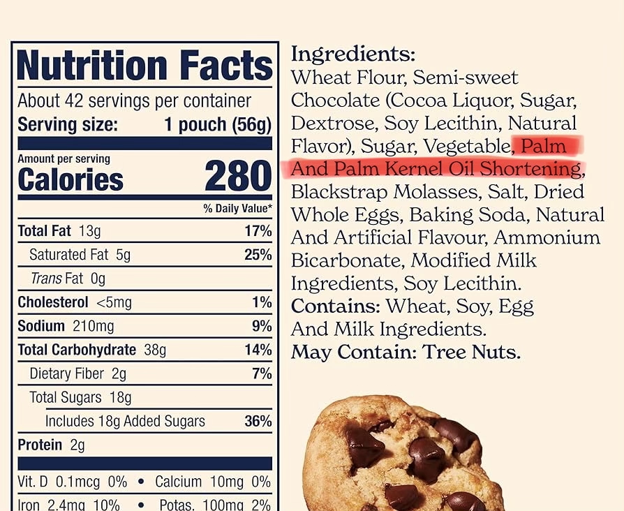
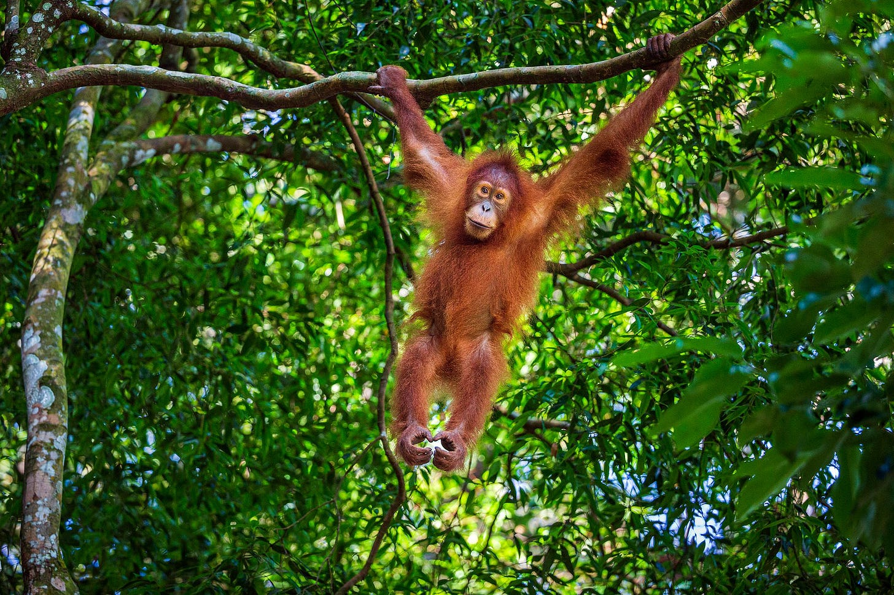
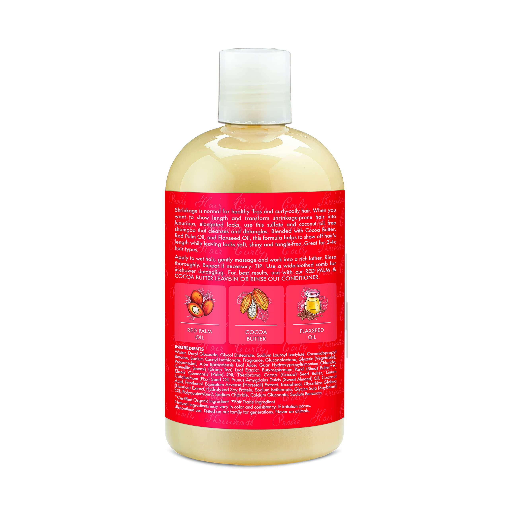
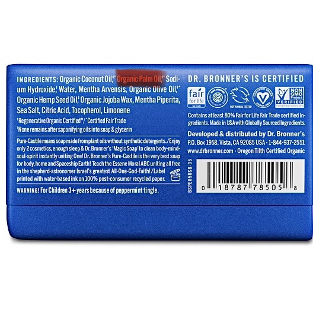
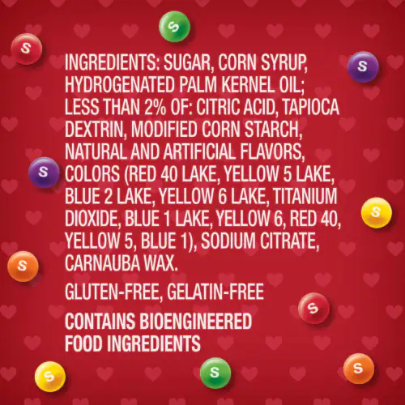
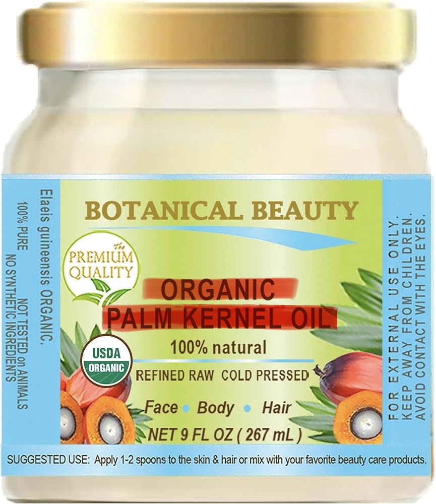

Cookies
Many packaged snacks use palm oil because it is stable, cheap, and gives food a smooth texture.
Biodiversity loss is closer than it looks.
In cookies, instant noodles, shampoo, soap, and cosmetics, palm oil quietly connects everyday life to rainforest loss and orangutan habitat decline.
Start with your home
This site explores biodiversity loss through one specific case: orangutan habitat loss linked to palm oil production in Indonesia. Instead of treating orangutans as a distant wildlife issue, it traces how an endangered species becomes connected to ordinary consumer products and global systems of production.
Orangutan decline is not only a conservation problem. It is also a media problem, a consumption problem, and a slow environmental crisis hidden inside daily life. By following the path from household products back to rainforests, this site shows how biodiversity loss is shaped by human choices, economic systems, and the ways environmental problems are made visible.
Palm oil is cheap, versatile, and widely used. That is why it appears in many processed foods, personal care products, cosmetics, and household items. The problem is not that one cookie destroys a forest. The problem is that millions of ordinary products are tied to a global system of extraction, production, and consumption.

Many packaged snacks use palm oil because it is stable, cheap, and gives food a smooth texture.

Fried noodle products often use palm oil, making the ingredient part of quick everyday meals.

Palm oil derivatives can appear in personal care products under names that are hard to recognize.

Many soaps and cleaners rely on palm-based ingredients because of their texture and foaming properties.

Palm oil helps create creamy textures in many spreads, candies, and processed desserts.

Beauty products may contain palm oil derivatives, linking personal care to global commodity chains.
A snack, soap, or cosmetic item contains palm oil or palm-based ingredients.
Palm oil travels through plantations, mills, exporters, and importing countries.
Rainforests are cleared or fragmented to create simplified plantation landscapes.
As forests shrink, orangutans lose food sources, movement routes, and safe habitats.
This chain changes how biodiversity loss can be understood. Orangutan decline is not only a story about endangered wildlife; it is also a story about how ecological costs are separated from the products that depend on them. The consumer sees a cheap product. The rainforest absorbs the cost.
Palm oil expansion shows how human economic systems reshape landscapes. Forests become plantations, species lose habitat, and local ecosystems are reorganized around global demand.
Orangutan decline does not happen all at once. It occurs through gradual forest loss, habitat fragmentation, and repeated development decisions that slowly become irreversible.
The way biodiversity loss is presented shapes whether it appears distant or immediate. By starting with familiar products and tracing them back to rainforest loss, the issue becomes easier to understand as part of everyday life.
Learn why Bornean and Sumatran orangutans are critically endangered.
See how Indonesian forest loss makes slow violence visible.
Trace palm oil from Indonesian production regions to global consumer markets.
Move beyond guilt and explore awareness, transparency, and collective action.